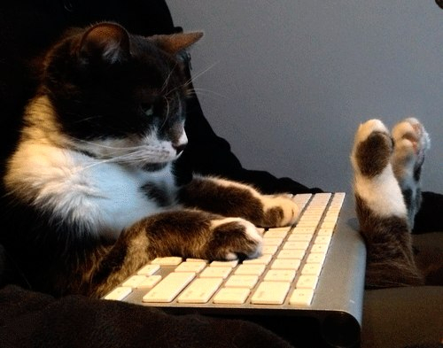

Обычно у меня нет никакого графика, ем что попало, сплю сколько попало, работаю когда попало, не могу найти время на самообразование и собственные проекты
Важно понять
Работать нужно не минимум 8 часов - а эффективно
Саморазвитие - это индивидуально - кому книги, кому видео уроки, кому хобби
Ты либо деградируешь, либо развиваешься
Планы - это неотъемлемая часть жизни. Настолько же неотъемлемая, как и неспособность их соблюдать

Что делать?
Найти свой темп
Не гнаться за всем
То, что вы делайте - делайте круто
Старайтесь в каждом проекте делать что-то новое и развиваться
Если вас вдруг одолевает лень?
Или вы застали себя бесцельно шагающим по страничкам, то способ простой: Сесть и вытянуть ноги, закрыть глаза и НИЧЕГО не делать. Через некоторое время начнут возникать мысли, что нужно сделать первое, второе, третье, а потом возникнет огромное желание ДЕЛАТЬ!